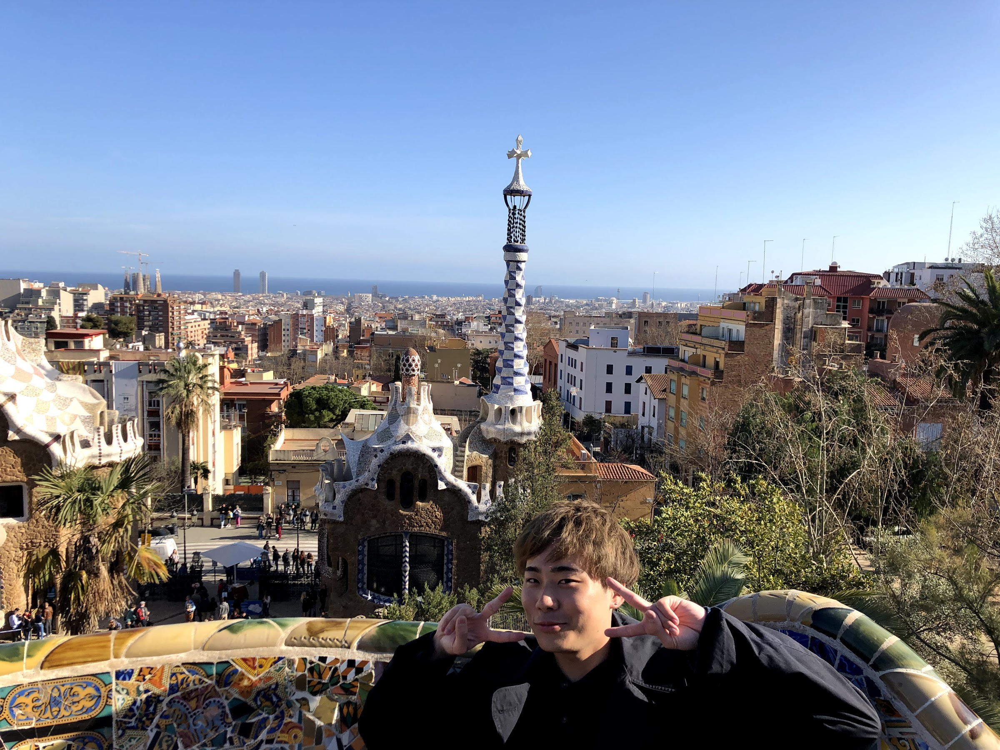

プロフィール
はじめまして、こんにちは！ヨーロッパが大好きな大学生かんたです。
僕は本来大学4年生なはずですが、現在休学中です（2020年）
旅しながら稼ぎたいと考えて、色々調べて出会ったプログラミングにハマり
このホームページも自力で作っています。
どうしてヨーロッパ一周をしたのか
大学2年の春休みに行ったスペイン旅行で初めて海外を知り、
その街並みにこれまで味わったことのないような感動を覚えました
ヨーロッパにはこんな建物があるのかと、、
カルチャーショックを受けもっと他のも見たい！
ただそれだけの動機でした。
昔からの夢でもなければ、一人旅なんて国内すらありませんでしたし、英語も喋れないです。
そんな人間でもたくさん満喫できたヨーロッパ旅を思い出として残そうと思って作りました！
次はどこに行きたいのか
コロナが猛威を振るってる世の中なので、、、しばらくは行けないんですが、
モロッコとポルトガルに行く予定です！
伝えたいもの
伝えたいものはとくにありませんが、バックパッカーはどんな人間でも
簡単にできるってことを証明できると思います！
最初のポートフォリオとして人に見せられるレベルの完成度にまで
持ってければと考えています（笑）

かんた
大学３年生のときにスペインに旅行に行きヨーロッパにハマり、半年後にヨーロッパ15カ国を周遊した。そのときの体験をブログにまとめました。プログラミングを現在独学で勉強中。